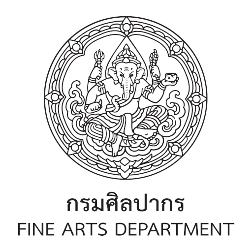

Wiang Kaew
The Royal Palace
✤ Mangrai Dynasty ✤
“Wiang Kaew” is located in Chiang Mai city wall, almost in the middle of the city, in Phra Sing Subdistrict. The site was the royal palace of Mangrai Dynasty which ruled Lanna Kingdom between the 13th – 16th centuries C.E.
The palace complex was divided into two main sections: the Outer Palace (eastern area) and the Inner Palace (western area). Excavations (2015-2019) revealed surviving remains in the southern sector of the Inner Palace, including:
- ✦ The southern, northern, and eastern palace walls
- ✦ A ditch and a well
- ✦ Foundations of a building and the palace chapel (Ho Phra)
The Palace Walls & Artefacts
The walls of Wiang Kaew are aligned approximately 10 degrees away from the East–West Axis and lie about 0.80–1.00 metres below the present ground. (Southern wall: 135.5m, Northern wall: 164.5m)
The monument was constructed using extra-large bricks, differing from typical Lanna bricks. The walls originally stood at least 2.40 metres high.
Recovered Artefacts: Chinese porcelain, Vietnamese, European, and Lanna ceramics, indicating continuous occupation since the 13th century CE.
From Royal Palace to Prison
During the reign of King Inthawichayanon (1873–1897 CE), a new royal residence was constructed in the east (now Yupparaj Wittayalai School).
Some south-western areas of Wiang Kaew were converted to the Provincial Prison around the 20th century CE. Since that time, Wiang Kaew ceased to serve as the royal palace of the Lanna Kingdom.

Information by Fine Arts Department